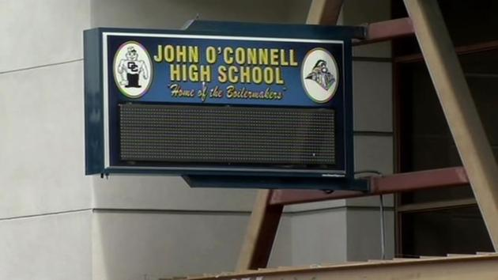

John O'Connell Is Becoming More Popular
April 30, 2015 - Cringe News - By Justin Le

Recently John O' Connell High School has been trying to get their name out to the population. And in the 2014-2015 school year, this high school has definitely succeeded in doing so.
O' Connell's first priority was to get more parent interaction with the school. So to attract their attention, the school decided to take in students from a continuation school. Very kind of them right? Well it worked, after a couple months of sharing buildings, O' Connell got more attention than they wanted both from the media and the students' parents. They were so popular that even the principal of John O' Connell got an interview from ABC News! Can you believe that!
After getting more parent involvement, O' Connell moved on to giving their students more attention. In attempts to obtain the students' affection, the school provided them more time off of school. It started as just a simple early release once a month, but when they learned that it wasn't enough to satisfy the students. So in hopes to gain the students' affection, the school decided to "withhold" the culinary lab's teachers for two weeks. What could go wrong, right?
During the two week, the school received many mixed responses from their students. When asked, one student's words were, "Yeah it's great! I can finally catch up on sleep!" Another student said, "At least I can do homework for other classes." Overall O'Connell's strategy to gain popularity and stand on top with the other more popular schools was successful. They gain the attention of the students, the parents, and even the city. Well done John O'Connell, I wish you good luck on your future plans!